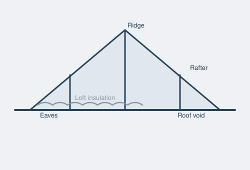

Everything you need to know before commissioning a Level 1, 2 or 3 survey on a London property — what's covered, what it costs, how long it takes, and how to act on the findings.
A Building Survey — known formally as a RICS Level 3 Home Survey — is the most detailed inspection and report you can commission on a residential property's condition. It's carried out in person by a Chartered Surveyor (holding MRICS or FRICS after their name) and covers the structure, fabric, services and condition of the building far more thoroughly than a mortgage valuation or even a Level 2 HomeBuyer Report.
Unlike a valuation, a Building Survey isn't concerned with market price — it exists to answer one question: what condition is this property actually in, and what will it cost me to put right?
RICS introduced its current Home Survey Standard on 1 March 2021 to bring more consistency and transparency to residential surveying across the UK, replacing the older "Condition Report", "HomeBuyer Report" and "Building Survey" naming with three clearly defined levels. Choosing the right one depends on the property's age, construction, condition and complexity — an RICS surveyor can advise which is appropriate for your specific property.
The RICS Level 1 Home Survey (previously called a "Condition Report") describes the property's condition, identifies risks and potential legal issues, and highlights urgent defects using a traffic-light rating system — but it doesn't advise on how to manage those defects, or what repairs are likely to cost. It's a standard visual inspection: secured panels, electrical fittings and inspection chamber covers aren't removed. Typically the lowest-priced of the three levels, it's aimed at conventional houses, flats and bungalows built from common materials and already in good condition — most often newer homes where major problems are considered unlikely.
The RICS Level 2 Home Survey (previously a "HomeBuyer Report") includes everything in a Level 1 survey, plus a more extensive roof space and drainage chamber inspection, and — unlike Level 1 — advice on defects and what maintenance or repairs may be required, helping you budget ahead. It's available as a survey only, or a survey with a valuation:
Suitable for conventional homes, generally under around 50 years old, built from common materials, simple in form and layout, and in reasonable condition.
The most comprehensive option. A Level 3 survey establishes how the property is built, what materials were used, and how they're likely to perform in future. It describes both visible defects and the potential for hidden ones, and sets out your repair options with a timeline and the consequences of leaving them undone — not just defect causes, but a genuine basis for budgeting. Recommended for:
In London specifically, a very high proportion of housing stock falls into at least one of these categories — which is why Level 3 surveys are so common here even for fairly standard-looking terraces and semis.
London's housing stock creates a distinctive set of risks that buyers in newer-build regions rarely encounter:
This is why a surveyor with genuine local London experience — who has seen hundreds of similar properties on similar streets — is worth more than a generic national panel firm.

A thorough Level 3 report from Byrne & Co will cover:
Cost depends on the property's size, age, value and complexity. As a general guide for London properties in 2026:
| Property | Level 1 | Level 2 | Level 3 |
|---|---|---|---|
| 1–2 bed flat | £350–£420 | £450–£550 | £650–£800 |
| 3 bed terrace/semi | £400–£480 | £500–£620 | £750–£950 |
| 4+ bed house | £450–£550 | £600–£750 | £900–£1,300+ |
Indicative only — get a free, tailored estimate for your exact property via our contact form.
The on-site inspection typically takes 2–4 hours for a standard family home, longer for larger or more complex properties. Your written report is usually delivered within 5 working days of the inspection, though we can often turn around faster if you're working to a tight exchange deadline — just ask.
Reports use a traffic-light or numbered condition rating system for each building element. Focus first on anything flagged as urgent or significant — these are the items that could affect safety, cause further damage if left, or carry a large repair cost. Minor and cosmetic items are worth noting but rarely change a purchase decision on their own.
A good surveyor's report should let you answer three questions: what's wrong, why, and roughly what it will cost to fix. If any of those are unclear, call your surveyor — a follow-up conversation is standard practice and should be included in the price.
It's common — and entirely reasonable — to use significant findings to renegotiate the purchase price or ask the seller to carry out repairs before completion. This works best when you:
Before instructing anyone, check:
Tell us about your property and a RICS chartered surveyor will respond within one working day.
Get QuoteTell us about the property and we'll come back with the right survey level within 24 hours.
All London postcodes and the M25 corridor.
Within 1 working day, Mon–Fri 8am–6pm.
A Level 2 HomeBuyer Report suits conventional homes in reasonable condition, while a Level 3 Building Survey gives a longer, more detailed inspection with repair options and cost implications, recommended for older or altered London properties.
Expect from £350 for a Level 1 Condition Report up to £650 or more for a Level 3 Building Survey, with the final price depending on the property's size, value and complexity.
Yes, even new builds benefit from an independent inspection, often called a snagging survey, to catch construction defects before your legal completion or during the developer's defects period.
As soon as possible. Booking early in London gives you time to use any findings to renegotiate or investigate further before contracts are exchanged.
Yes, our reports are written in plain English with a traffic-light rating system, and we follow up with a call to talk through anything that needs further explanation.
Yes, just ask and we're happy to share a sample report so you know exactly what to expect before committing to a survey.